論文詳細解析——《PointNet++: Deep Hierarchical Feature Learning on Point Sets in a Metric Space》著者の前書きAbstract (概要)1. Introduction (はじめに)2. Problem Statement (問題陳述)3. Method (方法)3.1 PointNet [20] 综述：通用連続集合関数近似器3.2 層次化点集特徴学習3.3 非均一なサンプリング密度におけるロバストな特徴学習3.4 セット分割のための点特徴伝播4. Experiments (実験)4.1 ユークリッド距離空間における点集合の分類4.2 语义シーンラベリングのための点群分割4.3 非ユークリッド距離空間における点集合の分類4.4 特徴の可視化5. Related Work (関連作業)6. Conclusion (結論)
注意：この記事は元々中国語で執筆され、こちらのサイトに公開されました。日本語版はGPT-4oを使用して翻訳されています。なお、筆者は日本語のレベルが初級であり、プロのコラムニストでもありません。また、人工翻訳や徹底的な校正を行う時間や能力が不足しているため、不備がある可能性があります。どうかご容赦いただければ幸いです。この記事が皆様の読書体験に影響を与えないことを願っています。言語や内容に関する問題、または改善案がありましたら、遠慮なくliaoziqiang7@gmail.comまでご連絡ください。
約1か月前、私はPointNetの論文解析を書きました。内容が少し難解で学術的であるため、かつ領域も狭いため、あまり多くの人が見ることはないと思っていましたが、この1か月で閲覧数がなんと1.2Kに達しました。ここで筆者は、私の小さな仕事へのご支持に感謝いたします！今日お届けするのは、前回予告したPointNet++の論文解析です。PointNetに比べて、PointNet++は明らかにより成熟しており、私たちのプロジェクトにとってもより良い選択となります。それはPointNetの研究の拡張であるため、読者は必ず先にPointNetの論文解析を読んで、PointNetのアーキテクチャと原理を熟知し、その後にこの記事を読むことをお勧めします。多くの重複した内容についてはこの記事で再度説明しません。以下にいくつかの質問を示していますが、読者は自分でテストし、PointNetの理解度を確認してみてください：
上記の質問に流暢に答えることができれば、おめでとうございます、次の読み物を進めることができます。この記事は基本的にPointNet論文解析のスタイルを引き継いでおり、同様にPointNetの原理を理解したい読者、特に研究の道に足を踏み入れたばかりの学生向けです。私は原文で設計された概念や背景知識を拡張するだけでなく、私が原文を理解する際の思考過程もできるだけ示します。また、PointNet++論文はPointNetに比べて内容がやや少なく、手動で設計されたステップが多く含まれているため、可能な限りコードを組み合わせて、より多くの詳細をカバーします。ただし、私はまだ研究初心者であり、限られた能力を持っているので、誤りを発見したり改善提案があれば、読者は惜しみなく教えてください。この記事が皆様の学習や研究に役立つことを願っています。より良い読み取り体験を望む場合は、このウェブページにアクセスし、去る前にいいねとコレクションを残してくださいね。対応するGitHubリポジトリで元のファイルを入手することもできます。それでは正式に始めましょう。
Few prior works study deep learning on point sets. PointNet [20] is a pioneer in this direction. However, by design, PointNet does not capture local structures induced by the metric space points live in, limiting its ability to recognize fine-grained patterns and generalizability to complex scenes. In this work, we introduce a hierarchical neural network that applies PointNet recursively on a nested partitioning of the input point set. By exploiting metric space distances, our network is able to learn local features with increasing contextual scales. With further observation that point sets are usually sampled with varying densities, which results in greatly decreased performance for networks trained on uniform densities, we propose novel set learning layers to adaptively combine features from multiple scales. Experiments show that our network called PointNet++ is able to learn deep point set features efficiently and robustly. In particular, results significantly better than state-of-the-art have been obtained on challenging benchmarks of 3D point clouds.
① これまでの研究では、点集合上の深層学習に関する研究はほとんど行われていません。PointNet [20] はこの分野の先駆者です。② しかし、設計上の制限により、PointNet は点集合が存在するメトリック空間によって誘発される局所構造を捉えることができず、細かいパターンを認識したり、複雑なシーンに一般化したりする能力が制限されています。③ 本研究では、入力点集合の入れ子のような分割に対してPointNetを再帰的に適用する階層的ニューラルネットワークを導入します。メトリック空間の距離を利用することで、ネットワークは徐々に拡大する文脈的スケールで局所特徴を学習することができます。④ さらに、点集合が通常異なる密度でサンプリングされるため、一様密度で訓練されたネットワークの性能が大幅に低下することを観察し、この問題に対処するために、複数のスケールからの特徴を適応的に結合する新しい集合学習レイヤーを提案します。⑤ 実験の結果、PointNet++と呼ばれる我々のネットワークは、点集合の深い特徴を効率的かつ堅牢に学習できることが示されました。特に、困難な3D点群のベンチマークにおいて、現状の技術を大幅に上回る結果が得られました。
説明：
pointnet(pc)という関数を呼び出していると考えることができます。このpcがN個に分割され、それぞれの部分がpointnet(pc[i])を呼び出し、pc[i]がM個に分割され、それぞれの部分がpointnet(pc[i][j])を呼び出す、最大深度に達するまで続きます。トップレベルのpointnet(pc)にとって、N個の部分に分割された各部分が1点として抽象化され、それは実際にはN個の点の点群のみを処理することに相当します。各階層のある点の元々の特徴は、事実上次の階層における対応する領域の全体特徴なのです。この呼び出し構造は、再帰構造というものです。もっとも、実際には点群処理の順序は底から上への順序です。We are interested in analyzing geometric point sets which are collections of points in a Euclidean space. A particularly important type of geometric point set is point cloud captured by 3D scanners, e.g., from appropriately equipped autonomous vehicles. As a set, such data has to be invariant to permutations of its members. In addition, the distance metric defines local neighborhoods that may exhibit different properties. For example, the density and other attributes of points may not be uniform across different locations — in 3D scanning, the density variability can come from perspective effects, radial density variations, motion, etc.
私たちはユークリッド空間内の点の集合である幾何学的な点集合を分析することに関心を寄せています。特に重要なタイプの幾何学的な点集合は3Dスキャナーによってキャプチャされた点群であり、これは適切な装備を備えた自律型車両から取得されることがあります。集合として、このようなデータはそのメンバーの順列に対して不変でなければなりません。さらに、距離計量は異なる特性を示す可能性のある局所的な近傍を定義します。例えば、点の密度や他の属性は異なる位置で均一でないかもしれません。3Dスキャンにおいては、密度の変動は視点効果、放射状密度の変動、運動などから生じる可能性があります。
説明：
Few prior works study deep learning on point sets. PointNet [20] is a pioneering effort that directly processes point sets. The basic idea of PointNet is to learn a spatial encoding of each point and then aggregate all individual point features to a global point cloud signature. By its design, PointNet does not capture local structure induced by the metric. However, exploiting local structure has proven to be important for the success of convolutional architectures. A CNN takes data defined on regular grids as the input and is able to progressively capture features at increasingly larger scales along a multi-resolution hierarchy. At lower levels, neurons have smaller receptive fields, whereas at higher levels, they have larger receptive fields. The ability to abstract local patterns along the hierarchy allows better generalizability to unseen cases.
① 現在、点集合に関する深層学習を研究しているのはごく少数の研究です。PointNet [20] は点集合を直接処理する画期的な取り組みです。PointNet の基本的なアイデアは、各点の空間符号化を学習し、すべての点の特徴を集約してグローバルな点群のシグニチャを生成することです。しかし、その設計上の制約により、PointNetはメトリックによって誘導される局所構造を捉えることはできません。② しかし、局所構造を利用することが、畳み込みアーキテクチャの成功にとって重要であることが証明されています。畳み込みニューラルネットワーク（CNN）は、規則的なグリッド上のデータを入力として、多解像度の階層に沿って徐々に大きなスケールの特徴を捕捉することができます。低いレベルでは、ニューロンは小さな受容野を持ちますが、高いレベルでは、より大きな受容野を持ちます。階層に沿って局所パターンを抽象化する能力は、未知のケースに対してより良い一般化性を可能にします。
説明：
We introduce a hierarchical neural network, named PointNet++, to process a set of points sampled in a metric space in a hierarchical fashion. The general idea of PointNet++ is simple. We first partition the set of points into overlapping local regions by the distance metric of the underlying space. Similar to CNNs, we extract local features capturing fine geometric structures from small neighborhoods; such local features are further grouped into larger units and processed to produce higher-level features. This process is repeated until we obtain the features of the whole point set.
我たちは PointNet++ という名前の階層型ニューラルネットワークを紹介し、これはメトリックスペースでサンプリングされた点集合を階層的に処理します。PointNet++ の基本アイデアはシンプルです。まず、基礎空間の距離メトリックによって点集合を重なり合った局所領域に分割します。CNN に似た方法で、小さな近傍から微細な幾何学的構造を捉える局所的な特徴を抽出し、それらの局所的な特徴をより大きな単位にグループ化して処理し、より高次の特徴を生成します。このプロセスを繰り返すことで、点集合全体の特徴を取得します。
説明：
The design of PointNet++ has to address two issues: how to generate the partitioning of the point set, and how to abstract sets of points or local features through a local feature learner. The two issues are correlated because the partitioning of the point set has to produce common structures across partitions, so that weights of local feature learners can be shared, as in the convolutional setting. We choose our local feature learner to be PointNet. As demonstrated in that work, PointNet is an effective architecture to process an unordered set of points for semantic feature extraction. In addition, this architecture is robust to input data corruption. As a basic building block, PointNet abstracts sets of local points or features into higher level representations. In this view, PointNet++ applies PointNet recursively on a nested partitioning of the input set.
PointNet++の設計には二つの問題を解決する必要があります：点集合の分割を生成する方法、そして局所的な特徴学習者を通じて点集合または局所的な特徴を抽象化する方法です。①この二つの問題は相互に関連しており、点集合の分割は異なる分割間での共通の構造を生み出す必要があります。これは畳み込み設定と同様に、局所的な特徴学習者の重みを共有できるようにするためです。②私たちは局所的な特徴学習者としてPointNetを選択します。この作業で示されたように、PointNetは無秩序な点集合を処理して、セマンティックな特徴抽出を行う効果的なアーキテクチャです。さらに、このアーキテクチャは入力データの破損に対する頑健性を持っています。基本的な構成要素として、PointNetは局所的な点または特徴集合をより高次の表現に抽象化することができます。この観点から、PointNet++は入力点集合のネストされた分割に対してPointNetを再帰的に適用します。
説明：
One issue that still remains is how to generate overlapping partitioning of a point set. Each partition is defined as a neighborhood ball in the underlying Euclidean space, whose parameters include centroid location and scale. To evenly cover the whole set, the centroids are selected among input point set by a farthest point sampling (FPS) algorithm. Compared with volumetric CNNs that scan the space with fixed strides, our local receptive fields are dependent on both the input data and the metric, and thus more efficient and effective.
まだ解決されていない問題の一つは、点集合の重複する分割をどのように生成するかということです。各分割は、基礎となるユークリッド空間内の近傍球として定義され、そのパラメータには、重心の位置とスケールが含まれます。点集合全体を均等にカバーするために、重心は最遠点サンプリング（FPS）アルゴリズムによって入力点集合から選択されます。固定したストライドで空間を走査する体積的なCNNと比較して、我々の局所受容野は入力データとメトリックの両方に依存しているため、より効率的かつ効果的です。
説明：
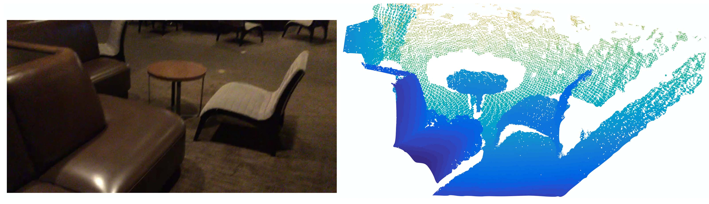
Figure 1: Visualization of a scan captured from a Structure Sensor (left: RGB; right: point cloud).
図1： Structure Sensorから取得したスキャンの可視化（左：RGB；右：点群）。
Deciding the appropriate scale of local neighborhood balls, however, is a more challenging yet intriguing problem, due to the entanglement of feature scale and non-uniformity of input point set. We assume that the input point set may have variable density at different areas, which is quite common in real data such as Structure Sensor scanning. Our input point set is thus very different from CNN inputs which can be viewed as data defined on regular grids with uniform constant density. In CNNs, the counterpart to local partition scale is the size of kernels. Research shows that using smaller kernels helps to improve the ability of CNNs. Our experiments on point set data, however, give counter evidence to this rule. Small neighborhoods may consist of too few points due to sampling deficiency, which might be insufficient to allow PointNets to capture patterns robustly.
しかし、局所的な近傍球の適切なスケールを決定することは、特徴のスケールと入力点セットの非均一性の絡み合いによって、より挑戦的で興味深い問題となります。入力点セットが異なる領域で変動する密度を持つ可能性があると仮定します。これはStructure Sensorのスキャンのような実際のデータでは非常に一般的です。したがって、私たちの入力点セットは、均一な常数密度で正規グリッド上に定義されたデータとみなされるCNNの入力とは大きく異なります。CNNにおいて、局所的な分割スケールに対応するのはカーネルのサイズです。小さいカーネルを使うことでCNNの能力が向上することが研究で示されています。しかし、点セットデータに関する我々の実験は、この規則に対する反証を提供します。小さな近傍はサンプリング不足のためにあまりにも少ない点しか含んでいない可能性があり、これはPointNetがパターンを確実に捉えるには不十分かもしれません。
説明：
A significant contribution of our paper is that PointNet++ leverages neighborhoods at multiple scales to achieve both robustness and detail capture. Assisted with random input dropout during training, the network learns to adaptively weight patterns detected at different scales and combine multi-scale features according to the input data. Experiments show that our PointNet++ is able to process point sets efficiently and robustly. In particular, results that are significantly better than state-of-the-art have been obtained on challenging benchmarks of 3D point clouds.
我々の論文の重要な貢献の一つは、PointNet++が多スケールでの近傍を活用して、頑健性と詳細捕捉の両方を実現することです。トレーニング時にランダムな入力ドロップアウトを併用し、ネットワークが異なるスケールで検出されたパターンに適応的に重み付けを行い、入力データに応じて多スケールの特徴を組み合わせることを学習します。実験から、PointNet++が点セットを効率的かつ安定的に処理できることが示されています。特に、チャレンジングな3Dポイントクラウドのベンチマークで、最先端技術を大幅に上回る結果が得られました。
説明：
Suppose that
is a discrete metric space whose metric is inherited from a Euclidean space , where is the set of points and is the distance metric. In addition, the density of in the ambient Euclidean space may not be uniform everywhere. We are interested in learning set functions that take such as the input (along with additional features for each point) and produce information of semantic interest regarding . In practice, such can be a classification function that assigns a label to or a segmentation function that assigns a per-point label to each member of .
仮定
Our work can be viewed as an extension of PointNet [20] with added hierarchical structure. We first review PointNet (Sec. 3.1) and then introduce a basic extension of PointNet with hierarchical structure (Sec. 3.2). Finally, we propose our PointNet++ that is able to robustly learn features even in non-uniformly sampled point sets (Sec. 3.3).
私たちの仕事は、階層構造を追加したPointNet [20] の拡張として見ることができます。まず、PointNet（第3.1節）をレビューした後、階層構造を持つPointNetの基本的な拡張を紹介します（第3.2節）。最後に、非均一にサンプリングされた点集合でも堅牢に特徴を学習できるPointNet++を提案します（第3.3節）。
説明：
./modelsに移動すると、6つのファイルが見つかります。以下では、コードを用いて物体カテゴリーの識別を例に説明します。pointnet_cls_basic.pyはPointNetの実装（第3.1節）、pointnet2_cls_ssg.pyはSSG（シングルスケールグルーピング）の実装（第3.2節）、pointnet2_cls_msg.pyは前述のMSG（マルチスケールグルーピング）、つまりPointNet++の実装（第3.3節）です。Given an unordered point set
with , one can define a set function that maps a set of points to a vector: where
and are usually multi-layer perceptron (MLP) networks. The set function
in Eq. 1 is invariant to input point permutations and can arbitrarily approximate any continuous set function [20]. Note that the response of can be interpreted as the spatial encoding of a point (see [20] for details). PointNet achieved impressive performance on a few benchmarks. However, it lacks the ability to capture local context at different scales. We will introduce a hierarchical feature learning framework in the next section to resolve the limitation.
無作為の点集合
ここで、
式 (1) の集合関数
PointNet はいくつかのベンチマークで印象的な性能を達成しました。しかし、異なるスケールで局所的な文脈を捉える能力が不足しています。この制限を解決するために、次のセクションで階層フィーチャー学習フレームワークを導入します。
説明：
While PointNet uses a single max pooling operation to aggregate the whole point set, our new architecture builds a hierarchical grouping of points and progressively abstracts larger and larger local regions along the hierarchy.
PointNetは、単一の最大プーリング操作を使用して全体の点集合を集約していますが、私たちの新しいアーキテクチャは分層的に点をグループ化し、階層に沿ってだんだんと大きな局所領域を抽象化します。
本小節で使用するコードはすべて
./models/pointnet2_cls_ssg.pyおよびその関連コードから来ています。
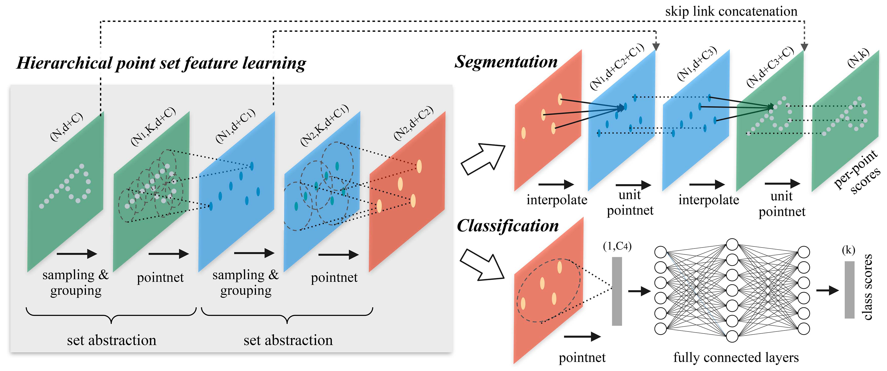
Figure 2: Illustration of our hierarchical feature learning architecture and its application for set segmentation and classification using points in 2D Euclidean space as an example. Single scale point grouping is visualized here. For details on density adaptive grouping, see Fig. 3
図2： 私たちの階層的特徴学習アーキテクチャの概念図と、2Dユークリッド空間での点を用いた集合のセグメンテーションと分類への応用。ここでは単一スケールの点グループ化が視覚化されています。密度適応型グループ化の詳細については、図3を参照してください。
Our hierarchical structure is composed of a number of set abstraction levels (Fig. 2). At each level, a set of points is processed and abstracted to produce a new set with fewer elements. The set abstraction level is made of three key layers: Sampling layer, Grouping layer, and PointNet layer. The Sampling layer selects a set of points from input points, which defines the centroids of local regions. The Grouping layer then constructs local region sets by finding “neighboring” points around the centroids. The PointNet layer uses a mini-PointNet to encode local region patterns into feature vectors.
我々の階層構造は、複数のセット抽象レベルで構成されています（図2参照）。各レベルで、一組の点が処理され抽象化され、要素数が少ない新しい集合が生成されます。セット抽象レベルは、サンプリング層、グルーピング層、そしてPointNet層の3つの主要層から成り立っています。サンプリング層は入力点から一組の点を選択し、局所領域の中心を定義します。その後、グルーピング層はこれらの中心の周りに「隣接する」点を見つけて局所領域セットを構築します。PointNet層は、小型のPointNetを使用して局所領域のパターンを特徴ベクトルにエンコードします。
説明：
pointnet_util.pyのsample_and_group関数に対応しています。A set abstraction level takes an
matrix as input that is from points with -dim coordinates and -dim point feature. It outputs an matrix of subsampled points with -dim coordinates and new -dim feature vectors summarizing local context. We introduce the layers of a set abstraction level in the following paragraphs.
ある集合抽象レベルは、
説明：
核心処理コードは以下の通りです：
1l1_xyz, l1_points, l1_indices = pointnet_sa_module(l0_xyz, l0_points, npoint=512, radius=0.2, nsample=32, mlp=[64,64,128], mlp2=None, group_all=False, is_training=is_training, bn_decay=bn_decay, scope='layer1', use_nchw=True)2l2_xyz, l2_points, l2_indices = pointnet_sa_module(l1_xyz, l1_points, npoint=128, radius=0.4, nsample=64, mlp=[128,128,256], mlp2=None, group_all=False, is_training=is_training, bn_decay=bn_decay, scope='layer2')3l3_xyz, l3_points, l3_indices = pointnet_sa_module(l2_xyz, l2_points, npoint=None, radius=None, nsample=None, mlp=[256,512,1024], mlp2=None, group_all=True, is_training=is_training, bn_decay=bn_decay, scope='layer3')xyzサフィックスのあるものはpointsサフィックスのあるものはxyzは最初に点の座標を示し、その後はブロックの中心座標を示します。特徴はすでに位置のエンコードを含んでいますが、残りの層では原始座標情報が
Sampling layer. Given input points
, we use iterative farthest point sampling (FPS) to choose a subset of points , such that is the most distant point (in metric distance) from the set with regard to the rest points. Compared with random sampling, it has better coverage of the entire point set given the same number of centroids. In contrast to CNNs that scan the vector space agnostic of data distribution, our sampling strategy generates receptive fields in a data-dependent manner.
サンプリングレイヤー（Sampling layer）。 入力点集
説明：
ここでは、FPSアルゴリズムの原理とステップをコードに基づいて紹介します。主なコードは./tf_ops/sampling/tf_sampling_g.cuにあります：
まず、点集
次に、全ての点
farthestpointsamplingKernel関数のtd配列に保存されています。上記の手順を繰り返し、
ここで初期点の選択はランダムであるため、不確定性があります。しかし、著者は付録C.3で実験を行い、異なるランダムシードの下でも結果が安定していることを発見しました。
Grouping layer. The input to this layer is a point set of size
and the coordinates of a set of centroids of size . The output are groups of point sets of size , where each group corresponds to a local region and is the number of points in the neighborhood of centroid points. Note that varies across groups but the succeeding PointNet layer is able to convert a flexible number of points into a fixed-length local region feature vector.
分割層 (Grouping layer)。このレイヤーへの入力は、サイズが
説明：
サンプリングとグルーピングは同じ関数内で実装されているため、一緒に説明します。以下は完全なコードです：
xxxxxxxxxx171def sample_and_group(npoint, radius, nsample, xyz, points, knn=False, use_xyz=True):2 new_xyz = gather_point(xyz, farthest_point_sample(npoint, xyz)) # (batch_size, npoint, 3)3 if knn:4 _,idx = knn_point(nsample, xyz, new_xyz)5 else:6 idx, pts_cnt = query_ball_point(radius, nsample, xyz, new_xyz)7 grouped_xyz = group_point(xyz, idx) # (batch_size, npoint, nsample, 3)8 grouped_xyz -= tf.tile(tf.expand_dims(new_xyz, 2), [1,1,nsample,1]) # translation normalization9 if points is not None:10 grouped_points = group_point(points, idx) # (batch_size, npoint, nsample, channel)11 if use_xyz:12 new_points = tf.concat([grouped_xyz, grouped_points], axis=-1) # (batch_size, npoint, nample, 3+channel)13 else:14 new_points = grouped_points15 else:16 new_points = grouped_xyz17 return new_xyz, new_points, idx, grouped_xyz第2行：farthest_point_sample(npoint, xyz) は、すべての点の座標から FPS アルゴリズムを用いて npoint 個の点（つまり gather_point(xyz, farthest_point_sample(npoint, xyz)) は、これらのインデックスを使用してこれらの点の実際の座標を見つけます。これがサンプリング層です。
第6行：サンプリングされた各点に対して、query_ball_point はそれを半径とする球を描き、その中に含まれるすべての点を一つのグループにします。ここで返されるのもインデックスです。group_point(xyz, idx) はこれらのインデックスに対応する座標を取り出します。注意すべきは、このステップの出力サイズは (batch_size, npoint, nsample, 3) ですが、各近傍に実際に nsample (つまり r より小さい場合にはそのグループに入れ、数が nsample に達したらそこで終わるというものです。もし nsample に満たなければ、見つけた最初の点群で不足部分を埋めます。どんな場合でも少なくとも当該点自身が含まれるため、どの点も見つからないということはありません。詳細なコードは ./tf_ops/grouping/tf_grouping_g.cu の query_ball_point_gpu 関数にあります。PointNet の論文の定理 2 によれば、欠損時の埋め込み操作は出力結果に影響しません。もちろん、これによって計算量は増えますが、埋め込むことで並列性が向上するので、妥当なコストと言えます。knn 戦略は最も近い
第8行：ここでは3つの作業をしました。まず tf.expand_dims(new_xyz, 2) を使って new_xyz の次元を (batch_size, npoint, 1, 3) に拡張し、その後第3次元を複製して (batch_size, npoint, nsample, 3) に拡張します。この時点で、後の2つの次元は現在のグループの中心点の座標の繰り返しのリストであり、グループ内のすべての点と一対一で対応しています。この操作の主な目的は並列計算を容易にし、逐次処理を避けることです。最後に -= を用いてグループ内のすべての点の座標を中心点の座標から引き、位置を平衡化します。ここではスケーリングは行いません。スケーリングは尺度情報を破壊する可能性があるためと推測されます。
l1 レイヤーでは、初期の特徴がないため入力 l0_points は None です。したがって、元の座標から特徴を抽出する必要があります。そのため、16行目で grouped_xyz が初期特徴として直接使用され、PointNet レイヤーに入力されます。以降のレイヤーでは、特徴が前のグループに従って再配置され、PointNet レイヤーに入力されます。use_xyz 変数はコード全体で True のままであり、元の座標がすべてのレベルで特徴として保持されることを意味します。
In convolutional neural networks, a local region of a pixel consists of pixels with array indices within a certain Manhattan distance (kernel size) of the pixel. In a point set sampled from a metric space, the neighborhood of a point is defined by metric distance.
Ball query finds all points that are within a radius to the query point (an upper limit of
is set in implementation). An alternative range query is K nearest neighbor (kNN) search which finds a fixed number of neighboring points. Compared with kNN, ball query’s local neighborhood guarantees a fixed region scale, thus making local region features more generalizable across space, which is preferred for tasks requiring local pattern recognition (e.g. semantic point labeling).
① 畳み込みニューラルネットワークにおいて、ピクセルの局所領域はそのピクセルから一定のマンハッタン距離（カーネルサイズ）内の配列インデックスを持つピクセルで構成されます。一方、計量空間からサンプリングされた点集合においては、点の近傍は計量距離によって定義されます。
球クエリ（Ball query）は、クエリポイントから一定の半径内にあるすべてのポイントを見つけます（実装では
説明：
./tf_ops/grouping/tf_grouping_g.cu の selection_sort_gpu 関数にあります。これは選択ソートに基づくアルゴリズムで、毎回未ソートの点群から中心点に最も近い点を見つけ、PointNet layer. In this layer, the input consists of
local regions of points with data size . Each local region in the output is abstracted by its centroid and local feature that encodes the centroid’s neighborhood. The output data size is . The coordinates of points in a local region are firstly translated into a local frame relative to the centroid point:
where
is the coordinate of the centroid. We use PointNet [20] as described in Sec. 3.1 as the basic building block for local pattern learning. By using relative coordinates together with point features, we can capture point-to-point relations in the local region.
PointNet レイヤー。このレイヤーの入力は
局所領域内の点の座標はまずセンターポイントに相対的な局所座標系に変換される：
ここで、
解説：
座標の並進変換は実際には前のsample_and_group関数で実行されている。
PointNet層の実装は./utils/pointnet_utils.pyのpointnet_sa_module関数内にあり、以下がそのソースコードである：
x1def pointnet_sa_module(xyz, points, npoint, radius, nsample, mlp, mlp2, group_all, is_training, bn_decay, scope, bn=True, pooling='max', knn=False, use_xyz=True, use_nchw=False):2 data_format = 'NCHW' if use_nchw else 'NHWC'3 with tf.variable_scope(scope) as sc:4 # Sample and Grouping5 if group_all:6 nsample = xyz.get_shape()[1].value7 new_xyz, new_points, idx, grouped_xyz = sample_and_group_all(xyz, points, use_xyz)8 else:9 new_xyz, new_points, idx, grouped_xyz = sample_and_group(npoint, radius, nsample, xyz, points, knn, use_xyz)10
11 # Point Feature Embedding12 if use_nchw: new_points = tf.transpose(new_points, [0,3,1,2])13 for i, num_out_channel in enumerate(mlp):14 new_points = tf_util.conv2d(new_points, num_out_channel, [1,1], padding='VALID', bn=bn, 15 stride=[1,1], is_training=is_training, scope='conv%d'%(i), 16 bn_decay=bn_decay, data_format=data_format) 17 if use_nchw: new_points = tf.transpose(new_points, [0,2,3,1])18
19 # Pooling in Local Regions20 if pooling=='max':21 new_points = tf.reduce_max(new_points, axis=[2], keep_dims=True, name='maxpool')22 elif pooling=='avg':23 new_points = tf.reduce_mean(new_points, axis=[2], keep_dims=True, name='avgpool')24 elif pooling=='weighted_avg':25 # 省略26 elif pooling=='max_and_avg':27 # 省略28
29 # [Optional] Further Processing 30 # 省略31
32 new_points = tf.squeeze(new_points, [2]) # (batch_size, npoints, mlp2[-1])33 return new_xyz, new_points, idx第5~9行：この部分はサンプリング層とグループ化層である。sample_and_group_allはsample_and_groupがnpoints=1のときの状態と考えられる、この場合すべての点が同じグループに含まれるため、操作の簡素化が可能で、近隣を探索するために再び区分する必要がなく、直接集約される。
第11~19行：この部分はMLPモジュール（new_pointsは各層で更新されていき、最終的な出力時には各点に対応したベクトルとして更新される。同じレベル内で、すべてのグループが共有するパラメーターを使用する。読者はこの公式に復帰できる：
第19~27行：この部分はpooling='max'が使用され、つまり最大プール（プーリングと訳すと誤解を招く可能性があり、一般的なCNNのプール層とあまり似ていない。ここでのPoolingは「集約」と翻訳する方が適切であると私は考えている）。ここでの四つのモードはすべて対称的であり、max_and_avgモードでは最大プールと平均プールで生成されたベクトルが接続される。weighted_avgは加重平均であり、モード時は、近接点の距離に基づいた重み平均を計算し、近接点特徴の重み付き平均値を計算する。このPointNetの実験によれば、maxを使用すると効果が最良で、これはキーセットを抽出するに等しい。
第32行：前段階で最大プールを経たため、第三の次元には統合されたベクトルのみが残り、tf.squeezeを用いて削除可能である。
As discussed earlier, it is common that a point set comes with non-uniform density in different areas introduces a significant challenge for point set feature learning. Features learned in dense data may not generalize to sparsely sampled regions. Consequently, models trained for sparse point clouds may not recognize fine-grained local structures.
前述のとおり、点集合は異なる領域で非均一な密度を持つことが常であり、これは点集合特徴学習に重大な課題をもたらします。密集データで学習された特徴は、疎にサンプリングされた領域には一般化できないおそれがあります。したがって、疎な点群のために訓練されたモデルは、細部にわたる局所的な構造を認識できないかもしれません。
説明：
./models/pointnet2_cls_msg.pyおよび関連コードからのものです。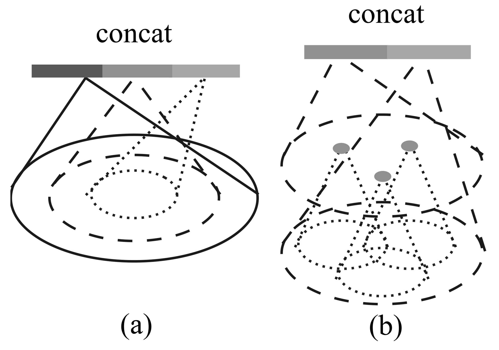
Figure 3: (a) Multi-scale grouping (MSG); (b) Multiresolution grouping (MRG).
図3：(a) マルチスケールグルーピング（MSG）；(b) マルチレゾリューショングルーピング（MRG）。
Ideally, we want to inspect as closely as possible into a point set to capture the finest details in densely sampled regions. However, such close inspection is prohibited in low-density areas because local patterns may be corrupted by the sampling deficiency. In this case, we should look for larger scale patterns in greater vicinity. To achieve this goal, we propose density adaptive PointNet layers (Fig. 3) that learn to combine features from regions of different scales when the input sampling density changes. We call our hierarchical network with density adaptive PointNet layers PointNet++.
Previously, in Sec. 3.2, each abstraction level contains grouping and feature extraction of a single scale. In PointNet++, each abstraction level extracts multiple scales of local patterns and combines them intelligently according to local point densities. In terms of grouping local regions and combining features from different scales, we propose two types of density adaptive layers as listed below.
理想的には、できるだけ密にサンプリングされた領域で点集合を詳細に調べ、最も微細な部分を捉えたいです。しかし、密度が低い領域では、サンプリングが不十分であるため、局所パターンが損なわれる恐れがあるため、そのような詳細な調査は禁じられています。この場合には、より大きな付近でより大きなスケールのパターンを探す必要があります。この目標を達成するために、入力サンプリング密度が変化した際に異なるスケールの領域から特徴を組み合わせることを学ぶ、密度適応型PointNetレイヤー（図3）の提案を行います。密度適応型PointNetレイヤーを含む階層的ネットワークをPointNet++と呼びます。
前文の第3.2節では、各抽象化レベルが単一スケールのグループ化と特徴抽出を含んでいました。しかし、PointNet++では、各抽象化レベルで複数のスケールの局所パターンを抽出し、それらを局所点密度に応じて賢く組み合わせます。局所領域のグループ化と異なるスケールの特徴の組み合わせに関して、以下の2種類の密度適応レイヤーを提案します。
Multi-scale grouping (MSG). As shown in Fig. 3 (a), a simple but effective way to capture multi-scale patterns is to apply grouping layers with different scales followed by corresponding PointNets to extract features of each scale. Features at different scales are concatenated to form a multi-scale feature.
マルチスケールグルーピング（Multi-scale grouping, MSG）。図3 (a)に示すように、マルチスケールパターンを捉えるための簡単かつ効果的な方法は、異なるスケールのグルーピング層を適用し、それに続いて対応するPointNetを使用して各スケールの特徴を抽出することです。異なるスケールの特徴を連結してマルチスケール特徴を形成します。
説明：
最初の解決策は、近傍を構築する際に複数の半径を同時に使用し、1つの中心点に対して複数の異なるスケールの領域を提供することです。それからこれらの領域の特徴をそれぞれ求め、それを直接連結します。コードは./utils/pointnet_utils.pyのpointnet_sa_module_msgにあります。以下の通りです：
xxxxxxxxxx231def pointnet_sa_module_msg(xyz, points, npoint, radius_list, nsample_list, mlp_list, is_training, bn_decay, scope, bn=True, use_xyz=True, use_nchw=False):2 data_format = 'NCHW' if use_nchw else 'NHWC'3 with tf.variable_scope(scope) as sc:4 new_xyz = gather_point(xyz, farthest_point_sample(npoint, xyz))5 new_points_list = []6 for i in range(len(radius_list)):7 radius = radius_list[i]8 nsample = nsample_list[i]9 idx, pts_cnt = query_ball_point(radius, nsample, xyz, new_xyz)10 grouped_xyz = group_point(xyz, idx)11 grouped_xyz -= tf.tile(tf.expand_dims(new_xyz, 2), [1,1,nsample,1])12 if points is not None:13 # 略14 if use_nchw: grouped_points = tf.transpose(grouped_points, [0,3,1,2])15 for j,num_out_channel in enumerate(mlp_list[i]):16 grouped_points = tf_util.conv2d(grouped_points, num_out_channel, [1,1],17 padding='VALID', stride=[1,1], bn=bn, is_training=is_training,18 scope='conv%d_%d'%(i,j), bn_decay=bn_decay)19 if use_nchw: grouped_points = tf.transpose(grouped_points, [0,2,3,1])20 new_points = tf.reduce_max(grouped_points, axis=[2])21 new_points_list.append(new_points)22 new_points_concat = tf.concat(new_points_list, axis=-1)23 return new_xyz, new_points_concat第4~14行：3.2章のコードと基本的に同じで、詳述しません。第6行では、半径がリストの形式で与えられます。
第15~19行：現在の半径下での領域に対してMLPを使用して特徴を抽出します。この抽出方法は3.2章と同様です。すべての特徴は一時的にnew_points_listに保存されます。
第22行：すべての特徴を連結し、より長いベクトルを形成します。
We train the network to learn an optimized strategy to combine the multi-scale features. This is done by randomly dropping out input points with a randomized probability for each instance, which we call random input dropout. Specifically, for each training point set, we choose a dropout ratio
uniformly sampled from where . For each point, we randomly drop a point with probability . In practice, we set to avoid generating empty point sets. In doing so, we present the network with training sets of various sparsity (induced by ) and varying uniformity (induced by randomness in dropout). During testing, we keep all available points.
我々はネットワークを訓練してマルチスケール特徴を組み合わせるための最適化された戦略を学習させます。これは各インスタンスごとにランダム化された確率で入力点をランダムにドロップアウトすることによって行われ、これをランダム入力ドロップアウトと呼びます。具体的には、各トレーニングポイントセットに対して、ドロップアウト率
説明：
データセットの観点から見ると、各点群に割り当てられる
ランダムドロップアウトなどのデータ拡張に関連するコードは
./utils/provider.pyにあります。
異なる
もちろん、点群の密度は無限大ではないため、小範囲で変動することがあります。しかし、小規模なモデルのデータセットを除いて、多くの大型物のデータセット、または屋内外のシーンをターゲットにしたデータセットは、点群数が非常に多く、何十万を超えることもあります。このような点群をランダムドロップアウトすることにより、不均一性は非常に小さな範囲にしか現れません。もちろん、点群分割を除いて、多くの点群タスクが実際に必要とする点群数は少ないため、先にサンプリングを行ってから処理することができます。しかし、現実のシナリオにおいて、著者が述べている密度の不均一の問題は、しばしば幾何構造や距離と関連しており、しばしば物体間の密度が大きく異なることがあります。したがって、著者のこの結論に対して私は困惑し、この方法が現実のシナリオにおける点群密度の不均一をシミュレートできるかどうかは疑問です。もちろん、現時点では実験を行うための時間がないため、分析に誤りがある場合やより良い理論分析方法があれば、関連知識のある読者に指導をお願いしたいと思います。
ここで、不均一度を向上させることができるデータ拡張方法を提案します。例えば、Habitatのような一般的なシミュレーションプラットフォームを選択し、目標物体をシーンの中央に配置し、周囲環境を空に設定して地面を透明にします。そして、ランダムに
Multi-resolution grouping (MRG). The MSG approach above is computationally expensive since it runs local PointNet at large scale neighborhoods for every centroid point. In particular, since the number of centroid points is usually quite large at the lowest level, the time cost is significant.
Here we propose an alternative approach that avoids such expensive computation but still preserves the ability to adaptively aggregate information according to the distributional properties of points. In Fig. 3 (b), features of a region at some level
is a concatenation of two vectors. One vector (left in figure) is obtained by summarizing the features at each subregion from the lower level using the set abstraction level. The other vector (right) is the feature that is obtained by directly processing all raw points in the local region using a single PointNet.
マルチ解像度グループ化（MRG）。 上述のMSG方法は計算コストが高く、各セントロイドポイントに対して大規模な近隣でローカルPointNetを実行する必要があります。特に、最も低いレベルではセントロイドポイントの数が通常非常に多いため、時間コストが顕著です。
ここで、こうした高価な計算を避けつつ、点の分布特性に応じて情報を適応的に集約する能力を保持する代替アプローチを提案します。図3（b）では、あるレベル
説明：
可能性としてMRGの効果がMSGほどではないため、MRGの実装は公開されたコードで提供されておらず、付録で少し触れられているだけです。これにより、MRGの理解が難しくなっています。私の理解は以下の通りです：
次に、SSG（すなわち3.2方法）、MSG、MRGを比較します。MSGはマルチスケールであり、異なるスケールを使用して近隣を構築することで、異なるスケールでの情報を同時に取得します。MRGはマルチ解像度であり、PointNetを使用して現在のレベルを要約するだけでなく、次のレベル中で現在のグループに対応するすべての点の情報を活用します。これは、2つの解像度で特徴を抽出することとして見ることができます。
MRGが密度不均一問題をどのように解決するか：前述のように、MSGとMRGはどちらも点群の密度不均一問題を解決する方法です。MSGは十分な点群を取り込むために範囲を拡大します。MRGは近隣内の点を「アンパック」し、各点群の点をすべて「解放」することで、密度が向上します。
When the density of a local region is low, the first vector may be less reliable than the second vector, since the subregion in computing the first vector contains even sparser points and suffers more from sampling deficiency. In such a case, the second vector should be weighted higher. On the other hand, when the density of a local region is high, the first vector provides information of finer details since it possesses the ability to inspect at higher resolutions recursively in lower levels.
Compared with MSG, this method is computationally more efficient since we avoid the feature extraction in large scale neighborhoods at lowest levels.
局所領域の点密度が低い場合、第1ベクトルは第2ベクトルよりも信頼性が低い可能性があります。これは、第1ベクトルの計算に使用されるサブ領域に更に希薄な点が含まれ、サンプリング不足の影響をより受けるためです。このような場合、第2ベクトルの重みを高くするべきです。一方、局所領域の点密度が高い場合、第1ベクトルは再帰的に低いレベルで高解像度の観察を行う能力を持っているため、より細かい情報を提供できます。
MSGと比較して、この手法は計算上効率的です。最低レベルでの大規模な近傍での特徴抽出を避けるためです。
説明：
ここでは2つのベクトルの重みが異なるべきと述べられていますが、実装方法は示されていません。公開されたコードがないため、いくつかの推測をするしかありません。
query_ball_pointが2つの値を返すことに注意が必要です。1つ目はグループごとに整理された各点のインデックス、2つ目は各グループ内の実際の点の数です。この量はpointnet_sa_module_msgなどの関数では使用されませんが、存在しているため、MRG方法に使用されていると推測するのが合理的です。In the set abstraction layer, the original point set is subsampled. However, in the set segmentation task such as semantic point labeling, we want to obtain point features for all the original points. One solution is to always sample all points as centroids in all set abstraction levels, which, however, results in high computation cost. Another way is to propagate features from subsampled points to the original points.
セット抽象レイヤーでは、元の点集合がサンプリングされます。しかし、意味点ラベリングのようなセット分割タスクにおいては、すべての元の点に対して点特徴を取得したいと考えます。一つの解決策は、すべてのセット抽象レベルですべての点を中心点として常にサンプリングすることですが、これは高い計算コストをもたらします。もう一つの方法は、サンプリングされた点から元の点に特徴を伝播することです。
説明：
We adopt a hierarchical propagation strategy with distance-based interpolation and across-level skip links (as shown in Fig. 2). In a feature propagation level, we propagate point features from
points to points where and (with ) are point set sizes of input and output of set abstraction level . We achieve feature propagation by interpolating feature values of points at coordinates of the points. Among the many choices for interpolation, we use inverse distance weighted average based on nearest neighbors (as in Eq. 2, in default we use , ). The interpolated features on points are then concatenated with skip linked point features from the set abstraction level. Then the concatenated features are passed through a “unit pointnet”, which is similar to one-by-one convolution in CNNs. A few shared fully connected and ReLU layers are applied to update each point’s feature vector. The process is repeated until we have propagated features to the original set of points.
我々は、距離に基づく補間とレベル間スキップリンクを組み合わせた階層型伝播戦略を採用しています（図2参照）。特徴伝播レベルでは、ポイント特徴を
説明：
ここでまず、次の2点を説明します：
著者の記述と公式は一見抽象的に見えますが、実は難しくありません：
次に、「ユニットPointNet」を通じて更新を行います。このネットワークも学習可能で、各レベルに1つあります。同レベル内では重みが共有されます。PointNetの通常の構造との核心的な違いは、最大プーリング層がないという点です。単一ポイントの特徴を更新するだけだからです。そのため、著者はこれをCNNの「逐点畳み込み」に類似していると表現しています。MLPを通すため、更新後のポイントの特徴次元は、自身の特徴次元と上層の特徴次元の和ではなく、手動で設計された量になります。
要するに、逐点ラベル付けタスク（例えば、セマンティックセグメンテーションや法線予測）にPointNet++を使用する場合、FPモジュールを使用する必要があります。
Datasets. We evaluate on four datasets ranging from 2D objects (MNIST [11]), 3D objects (ModelNet40 [31] rigid object, SHREC15 [12] non-rigid object) to real 3D scenes (ScanNet [5]). Object classification is evaluated by accuracy. Semantic scene labeling is evaluated by average voxel classification accuracy following [5]. We list below the experiment setting for each dataset:
- MNIST: Images of handwritten digits with 60k training and 10k testing samples.
- ModelNet40: CAD models of 40 categories (mostly man-made). We use the official split with 9,843 shapes for training and 2,468 for testing.
- SHREC15: 1200 shapes from 50 categories. Each category contains 24 shapes which are mostly organic ones with various poses such as horses, cats, etc. We use five-fold cross-validation to acquire classification accuracy on this dataset.
- ScanNet: 1513 scanned and reconstructed indoor scenes. We follow the experiment setting in [5] and use 1201 scenes for training, 312 scenes for testing.
データセット. 我々は四つのデータセットで評価を行った。これらのデータセットは、2Dオブジェクト（MNIST [11]）、3Dオブジェクト（ModelNet40 [31] 剛性オブジェクト、SHREC15 [12] 非剛性オブジェクト）から実際の3Dシーン（ScanNet [5]）に至る。オブジェクト分類は正確さで評価され、セマンティックシーンラベリングは平均ボクセル分類精度による評価を行った。[5]に基づく手法を利用している。各データセットの実験設定は以下の通りである：
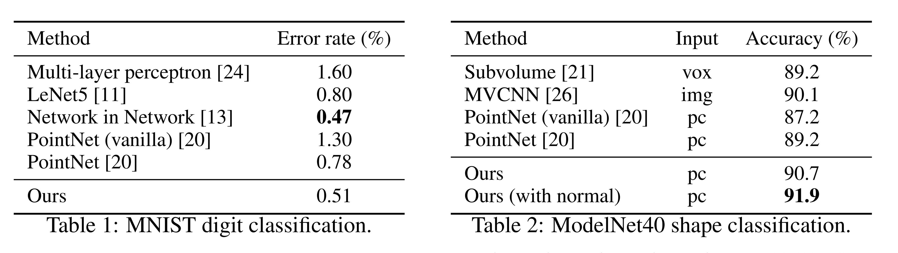
表1：MNIST数字分类。
表2：ModelNet40形状分类。
We evaluate our network on classifying point clouds sampled from both 2D (MNIST) and 3D (ModelNet40) Euclidean spaces. MNIST images are converted to 2D point clouds of digit pixel locations. 3D point clouds are sampled from mesh surfaces from ModelNet40 shapes. By default, we use 512 points for MNIST and 1024 points for ModelNet40. In the last row (ours normal) in Table 2, we use face normals as additional point features, where we also use more points (
) to further boost performance. All point sets are normalized to be zero mean and within a unit ball. We use a three-level hierarchical network with three fully connected layers.
我々は、2次元（MNIST）および3次元（ModelNet40）ユークリッド空間からサンプリングされた点群の分類能力を評価しました。MNIST画像は数字のピクセル位置からなる2次元点群に変換されます。3次元点群はModelNet40形状のメッシュ表面からサンプリングされます。デフォルトでは、MNISTには512ポイント、ModelNet40には1024ポイントを使用します。表2の最後の行（「ours normal」）では、面の法線を追加の点の特徴として使用し、パフォーマンスをさらに向上させるためにサンプルポイント数を増やしています（
Results. In Table 1 and Table 2, we compare our method with a representative set of previous state-of-the-art methods. Note that PointNet (vanilla) in Table 2 is the version in [20] that does not use transformation networks, which is equivalent to our hierarchical net with only one level.
まず、私たちの階層的学習アーキテクチャは、非階層的PointNet [20] よりも性能が大幅に向上しています。MNISTでは、PointNet（vanilla）およびPointNetと比較して、それぞれ60.8%および34.6%の相対的なエラー率の低下が見られます。ModelNet40分類では、同じ入力データサイズ（1,024点）と特徴（座標のみ）を使用した場合、私たちの方法はPointNetよりもはるかに強力です。次に、点集合に基づく方法が成熟した画像CNNと同等以上の性能を達成できることを観察しました。MNISTでは、私たちの方法（二次元の点集合に基づく）は、Network in Network CNNに近い精度を達成しています。ModelNet40では、法線情報を結合することで、以前の最先端の方法であるMVCNN [26] を大幅に上回ります。
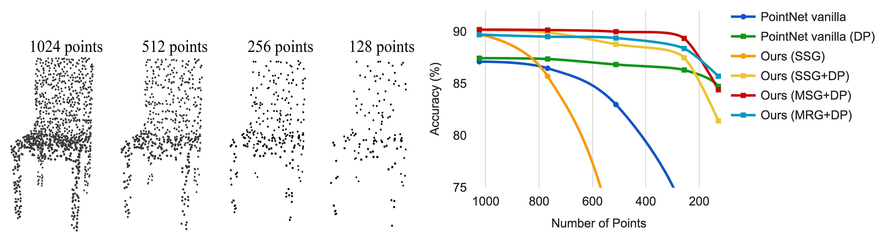
Figure 4: 左: ランダムなポイントドロップアウトを伴うポイントクラウド。右: 非一様密度を処理する際の密度適応戦略の利点を示す曲線。DPはトレーニング中のランダム入力のドロップアウトを意味します。それ以外の場合は、均一に密なポイントでのトレーニングです。詳細は第3.3節を参照してください。
Robustness to Sampling Density Variation. センサーから取得したデータは、通常、深刻な不規則サンプリングの問題に悩まされます（図1を参照）。我々のアプローチは、複数のスケールの点の近隣を選択し、それらを適切に重み付けすることで、記述性と堅牢性のバランスを取ります。
我々はテスト時にランダムに点をドロップアウトさせ（図4左を参照）、ネットワークが非均一で希薄なデータに対する堅牢性を検証します。図4右に示すように、MSG+DP（訓練時にランダム入力ドロップアウトを伴う多スケールグループ化）とMRG+DP（訓練時にランダム入力ドロップアウトを伴う多解像度グループ化）は、サンプリング密度の変動に対して非常に堅牢です。MSG+DPの性能は、1024点から256点へのテストで1%未満しか低下しません。さらに、代替手段と比較して、ほぼすべてのサンプリング密度で最良の性能を発揮します。PointNet vanilla [20]は、密度の変動に対してかなり堅牢ですが、これは細部ではなくグローバルな抽象に焦点を当てているためです。しかし、細部を失うことは、我々のアプローチと比較して威力が劣ることにもつながります。SSG（各レベルで単一スケールグループ化を行うPointNet++の改良版）は、希薄なサンプリング密度に対して一般化できませんが、SSG+DPは、訓練時にランダムで点をドロップアウトさせることにより、これを修正します。
サンプリング密度変動に対する堅牢性について. 現実世界から直接取得したセンサーデータは、通常、深刻な不規則サンプリングの問題に悩まされています（図1を参照）。我々の方法は、複数のスケールで点の近傍を選択し、適切な重み付けにより記述性と堅牢性をバランスよく調整して、この問題を解決します。
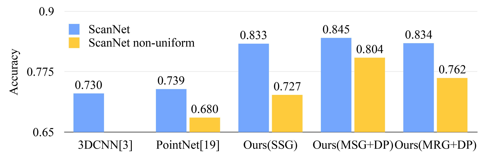
Figure 5: Scannet labeling accuracy.
図5: Scannetラベリングの正確性。
To validate that our approach is suitable for large scale point cloud analysis, we also evaluate on the semantic scene labeling task. The goal is to predict semantic object labels for points in indoor scans. [5] provides a baseline using fully convolutional neural networks on voxelized scans. They purely rely on scanning geometry instead of RGB information and report the accuracy on a per-voxel basis. To make a fair comparison, we remove RGB information in all our experiments and convert point cloud label prediction into voxel labeling following [5]. We also compare with [20]. The accuracy is reported on a per-voxel basis in Fig. 5 (blue bar).
我々のアプローチが大規模な点群解析に適していることを検証するために、セマンティックシーンラベリングタスクでも評価を行いました。このタスクの目標は、室内スキャンにおける点群の点に対してセマンティックなオブジェクトラベルを予測することです。[5] は、ボクセル化されたスキャンに完全畳み込みニューラルネットワークを使用したベースラインを提供しています。この方法はRGB情報ではなく、スキャンジオメトリに完全に依存しており、1ボクセルごとの精度を報告しています。公正な比較を行うために、すべての実験においてRGB情報を削除し、[5] に従って点群ラベル予測をボクセルラベリングに変換しました。我々はまた[20]の方法とも比較を行いました。各ボクセルの精度は、図5（青の棒グラフ）に示されています。
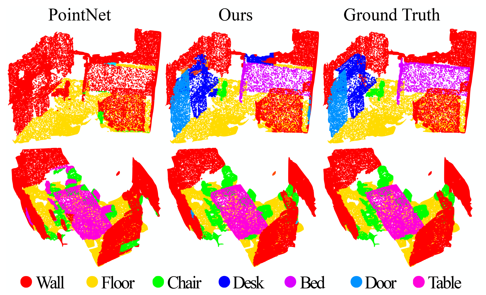
Figure 6: Scannet labeling results. [20] captures the overall layout of the room correctly but fails to discover the furniture. 私たちのアプローチは、対照的に部屋のレイアウト以外の物体をよりよくセグメント化します。
Our approach outperforms all the baseline methods by a large margin. In comparison with [5], which learns on voxelized scans, we directly learn on point clouds to avoid additional quantization error, and conduct data-dependent sampling to allow more effective learning. Compared with [20], our approach introduces hierarchical feature learning and captures geometry features at different scales. This is very important for understanding scenes at multiple levels and labeling objects with various sizes. We visualize example scene labeling results in Fig. 6.
私たちのアプローチは、すべてのベースライン方法に対して大きな優位性を示しています。[5]と比較すると、[5]はボクセル化されたスキャンで学習しますが、私たちは直接ポイントクラウド上で学習し、追加の量子化誤差を避け、そしてデータ依存のサンプリングを行ってより効果的な学習を可能にします。[20]と比較すると、私たちのアプローチは階層的な特徴学習を導入し、異なるスケールでの幾何的特徴を捉えます。これは、複数のレベルでシーンを理解し、さまざまなサイズのオブジェクトにラベルを付けるために非常に重要です。図6に例のシーンラベリング結果を可視化しています。
Robustness to Sampling Density Variation. To test how our trained model performs on scans with non-uniform sampling density, we synthesize virtual scans of Scannet scenes similar to that in Fig. 1 and evaluate our network on this data. We refer readers to supplementary material for how we generate the virtual scans. We evaluate our framework in three settings (SSG, MSG+DP, MRG+DP) and compare with a baseline approach [20].
サンプリング密度変動に対するロバスト性。 トレーニングされたモデルが非一様なサンプリング密度のスキャンシーンでどのように機能するかをテストするために、図1に似たScannetシーンの仮想スキャンを合成し、このデータでネットワークを評価しました。仮想スキャンの生成方法については、補足資料を参照してください。3つの設定（SSG、MSG+DP、MRG+DP）でフレームワークを評価し、ベースラインアプローチ[20]と比較しました。
Performance comparison is shown in Fig. 5 (yellow bar). We see that SSG performance greatly falls due to the sampling density shift from uniform point clouds to virtually scanned scenes. The MRG network, on the other hand, is more robust to the sampling density shift since it is able to automatically switch to features depicting coarser granularity when the sampling is sparse. Even though there is a domain gap between training data (uniform points with random dropout) and scanned data with non-uniform density, our MSG network is only slightly affected and achieves the best accuracy among methods in comparison. These prove the effectiveness of our density adaptive layer design.
性能比較は図5（黄色のバー）に示されている。SSGの性能は、均一な点群から仮想的にスキャンされたシーンへのサンプリング密度の変化により大幅に低下することがわかる。一方、MRGネットワークはサンプリングが粗い場合に粗い粒度を描写する特徴に自動的に切り替えることができるため、サンプリング密度の変化に対してよりロバストである。トレーニングデータ（ランダムなドロップアウトを伴う均一な点群）と非均一密度のスキャンデータとの間にドメインギャップが存在しても、我々のMSGネットワークはわずかに影響を受けるのみで、比較手法の中で最高の精度を達成している。これらは我々の密度適応レイヤーデザインの有効性を証明している。
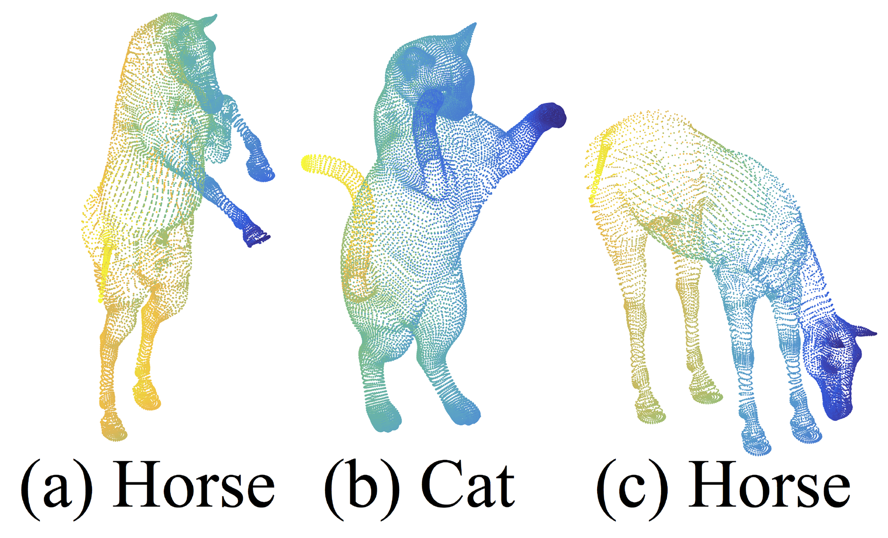
Figure 7: An example of nonrigid shape classification.
図7：非剛性形状分類の例。
In this section, we show the generalizability of our approach to non-Euclidean space. In non-rigid shape classification (Fig. 7), a good classifier should be able to classify (a) and (c) in Fig. 7 correctly as the same category even given their difference in pose, which requires knowledge of intrinsic structure. Shapes in SHREC15 are 2D surfaces embedded in 3D space. Geodesic distances along the surfaces naturally induce a metric space. We show through experiments that adopting PointNet++ in this metric space is an effective way to capture intrinsic structure of the underlying point set.
このセクションでは、我々の方法が非ユークリッド空間でも一般化できることを示します。非剛性形状分類タスク（図7）では、優れた分類器は、姿勢が異なっても図7の(a)と(c)を同じカテゴリとして正しく分類できなければなりません。これには、内在的な構造に関する知識が必要です。SHREC15の形状は3次元空間に埋め込まれた2次元の曲面です。曲面に沿った測地距離は、自然に距離空間を定義します。実験を通じて、この距離空間でPointNet++を採用することが、基礎的な点集合の内在的構造を捉えるための効果的な方法であることを示します。
説明：
この部分では、PointNet++の重要な拡張として、非ユークリッド距離空間における成果を探求します。SHREC15の表面は、完全な皮のように理解できます。それは伸びたり、縮んだりします。2つの点の距離は、3次元空間では変化するかもしれませんが、あなたがそのねじれた表面に住む2次元の生物だと仮定した場合、その表面がねじれていることは認識できません。したがって、表皮がどのように変形しても、あなたにとっては、直線（2次元生物の目に映る直線）を歩く限り、AからBへの距離は変わりません。この距離こそが測地距離です。このモデルは非剛性の形状をよく表現します。なぜなら、表面の各点の相対的な位置が変わらない限り、測地距離も変わらないからです。このため、距離は本質に良く適合します（読者にはこちらのビデオを参考に理解を深めることをお勧めします）。
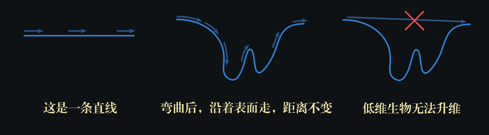
したがって、ユークリッド距離から他の非ユークリッド距離への距離測定手段を変換すれば、図7の(a)と(c)の形状は完全に一致します——馬は依然として馬であり、マクロな形状も細部も何も変わりません。そしてPointNet++はまさにこの距離測定手段を変換し、非剛性形状に適応させます。もちろん、たとえ変換しなくても、単にユークリッド距離を使用するだけで、PointNet++はかなりの頑丈さを備え、異なる姿勢の馬を概ね正しく識別することができます（表3を参照）。しかし、変換後のPointNet++はより良い効果をもたらし、そのアーキテクチャの汎用性を証明します。
For each shape in [12], we firstly construct the metric space induced by pairwise geodesic distances. We follow [23] to obtain an embedding metric that mimics geodesic distance. Next, we extract intrinsic point features in this metric space including WKS [1], HKS [27], and multi-scale Gaussian curvature [16]. We use these features as input and then sample and group points according to the underlying metric space. In this way, our network learns to capture multi-scale intrinsic structure that is not influenced by the specific pose of a shape. Alternative design choices include using XYZ coordinates as point features or using Euclidean space
as the underlying metric space. We show below these are not optimal choices.
[12]の各形状について、まず点対間の測地距離によって誘導される距離空間を構築します。[23]の方法に従い、測地距離を模倣する埋め込み距離を取得します。次に、この距離空間で点の内在的な特徴を抽出し、WKS [1]、HKS [27]、およびマルチスケールのガウス曲率[16]を含みます。これらの特徴を入力として使用し、基礎的な距離空間に従って点をサンプリングおよびグループ化します。この方法により、ネットワークは形状の具体的な姿勢に影響されずに多スケールの内在構造をキャプチャすることを学習します。他の設計選択肢には、XYZ座標を点の特徴として使用することや、基礎距離空間としてユークリッド空間
説明：
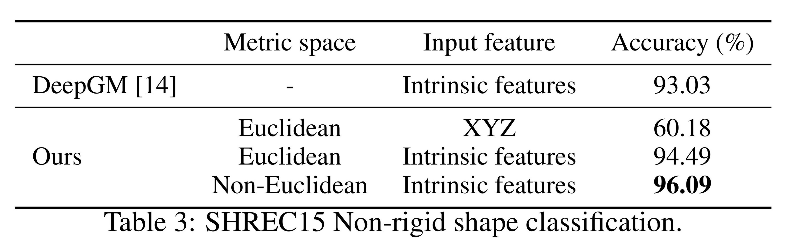
表3： SHREC15非剛性形状分類。
Results. We compare our methods with the previous state-of-the-art method [14] in Table 3. [14] extracts geodesic moments as shape features and uses a stacked sparse autoencoder to digest these features to predict shape category. Our approach, using non-Euclidean metric space and intrinsic features, achieves the best performance in all settings and outperforms [14] by a large margin.
結果。表3で、私たちの方法と以前の最新方法[14]を比較しました。[14]は形状特徴として測地モーメントを抽出し、これらの特徴をスタックされたスパースオートエンコーダを使用して処理し、形状カテゴリーを予測します。私たちの方法は、非ユークリッド計量空間と内在的な特徴を用いて、すべての設定で最高のパフォーマンスを達成し、大きな差で[14]を上回っています。
Comparing the first and second settings of our approach, we see intrinsic features are very important for non-rigid shape classification. The XYZ feature fails to reveal intrinsic structures and is greatly influenced by pose variation. Comparing the second and third settings of our approach, we see using geodesic neighborhood is beneficial compared with Euclidean neighborhood. Euclidean neighborhood might include points far away on surfaces and this neighborhood could change dramatically when shapes afford non-rigid deformation. This introduces difficulty for effective weight sharing since the local structure could become combinatorially complicated. Geodesic neighborhood on surfaces, on the other hand, gets rid of this issue and improves the learning effectiveness.
我々のアプローチの最初の設定と2番目の設定を比較すると、内在的な特徴が非剛性形状の分類に非常に重要であることがわかります。XYZ特徴は内在的な構造を明らかにすることができず、姿勢の変化に大きく影響されます。我々のアプローチの2番目と3番目の設定を比較すると、測地線近傍を使用することがユークリッド近傍と比較して有益であることがわかります。ユークリッド近傍は、曲面上で遠く離れた点を含む可能性があり、形状が非剛性変形を許すときに、この近傍は劇的に変化する可能性があります。これにより、局所構造が組み合わせ的に複雑になり、効果的な重み共有が難しくなります。一方で、曲面上の測地線近傍はこの問題を解消し、学習の有効性を向上させます。
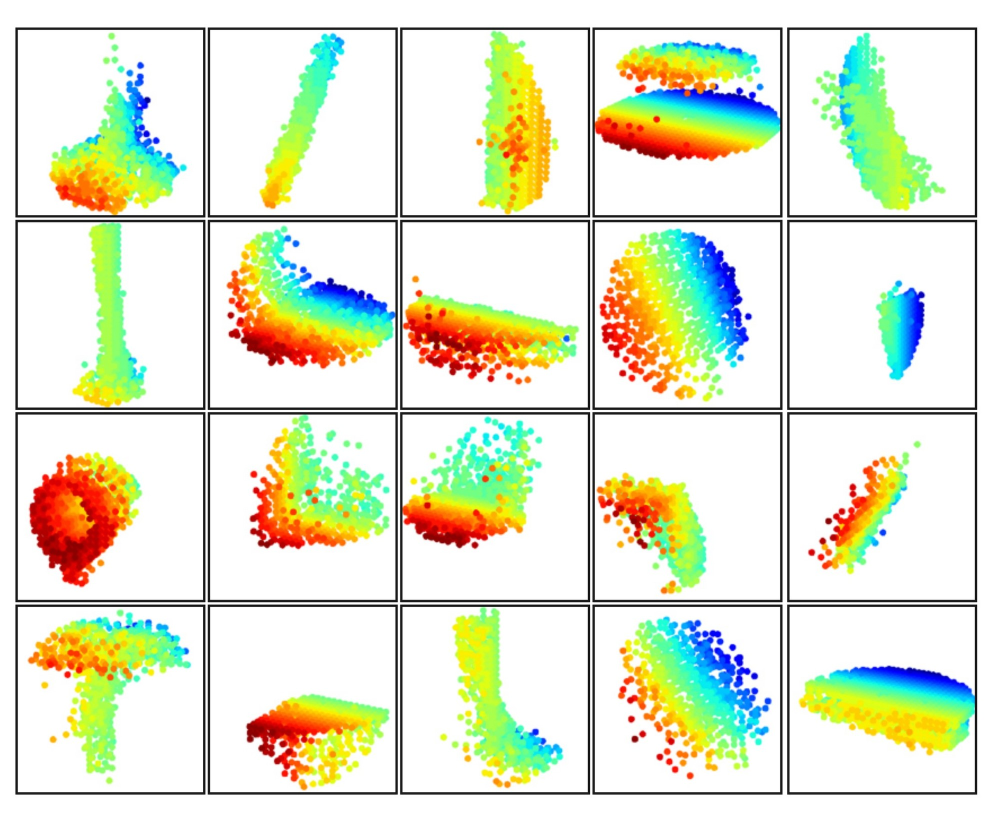
Figure 8: 3D point cloud patterns learned from the first layer kernels. The model is trained for ModelNet40 shape classification (20 out of the 128 kernels are randomly selected). Color indicates point depth (red is near, blue is far).
図8：第一層のカーネルから学習した3D点群パターン。このモデルは、ModelNet40の形状分類に使用されます（128個のカーネルから20個をランダムに選択）。色は点の深さを示し、赤色は近いことを、青色は遠いことを表します。
In Fig. 8, we visualize what has been learned by the first level kernels of our hierarchical network. We created a voxel grid in space and aggregate local point sets that activate certain neurons the most in grid cells (highest 100 examples are used). Grid cells with high votes are kept and converted back to 3D point clouds, which represent the pattern that the neuron recognizes. Since the model is trained on ModelNet40, which is mostly consisted of furniture, we see structures of planes, double planes, lines, corners, etc. in the visualization.
図8では、階層ネットワークの最初のレベルのカーネルが学習した内容を可視化しています。空間にボクセルグリッドを作成し、特定のニューロンを最も活性化するローカルポイントセットをグリッドセルに集約します（最高100例を使用します）。活性化値の高いグリッドセルを保持し、それを3Dポイントクラウドに変換します。これがニューロンが認識するパターンを表しています。モデルは家具が主に含まれるModelNet40で訓練されているため、可視化では平面、二重平面、線、角などの構造が見られます。
説明：
著者は関連するコードを公開していませんが、具体的な手順を再現することが可能であると考えられます。以下は私の推測に基づいています：
The idea of hierarchical feature learning has been very successful. Among all the learning models, convolutional neural network [10, 25, 8] is one of the most prominent ones. However, convolution does not apply to unordered point sets with distance metrics, which is the focus of our work.
A few very recent works [20, 28] have studied how to apply deep learning to unordered sets. They ignore the underlying distance metric even if the point set does possess one. As a result, they are unable to capture local context of points and are sensitive to global set translation and normalization. In this work, we target at points sampled from a metric space and tackle these issues by explicitly considering the underlying distance metric in our design.
階層的な特徴学習の考え方は非常に成功しています。すべての学習モデルの中で、畳み込みニューラルネットワーク[10, 25, 8]は最も代表的な方法の一つです。しかし、畳み込みは距離メトリックを持つ無秩序な点集合には適用されず、これが私たちの研究の焦点です。
いくつかの最近の研究[20, 28]は、深層学習を無秩序な集合に適用する方法を研究しています。これらの方法は、点集合がメトリックを持っていても、その下位の距離メトリックを無視しています。そのため、点の局所文脈を捉えることができず、グローバルな集合の移動および正規化に対して敏感です。本研究では、メトリック空間からサンプリングされた点に注視し、設計において下位の距離メトリックを明示的に考慮することで、これらの問題を解決します。
Points sampled from a metric space are usually noisy and have non-uniform sampling density. This affects effective point feature extraction and causes difficulty for learning. One of the key issues is to select the proper scale for point feature design. Previously, several approaches have been developed regarding this [19, 17, 2, 6, 7, 30] either in the geometry processing community or in photogrammetry and remote sensing community. In contrast to all these works, our approach learns to extract point features and balance multiple feature scales in an end-to-end fashion.
In 3D metric space, other than point sets, there are several popular representations for deep learning, including volumetric grids [21, 22, 29] and geometric graphs [3, 15, 33]. However, in none of these works has the problem of non-uniform sampling density been explicitly considered.
度量空間からサンプリングされた点は通常、ノイズがあり、サンプリング密度が不均一です。これにより効果的な点特徴抽出に影響を与え、学習に困難をもたらします。重要な問題の1つは、点特徴設計のための適切なスケールを選択することです。これまで、いくつかのアプローチが幾何処理コミュニティや写真測量・リモートセンシングコミュニティで開発されてきました [19, 17, 2, 6, 7, 30]。これらのすべての作業とは対照的に、私たちのアプローチは、エンドツーエンドで点特徴を抽出し、複数の特徴スケールをバランスすることを学習します。
3Dメトリックスペースでは、点集合以外にも、体積グリッド [21, 22, 29] や幾何学的グラフ [3, 15, 33] を含むディープラーニングのためのいくつかの人気のある表現があります。しかし、これらの作品のいずれにおいても、サンプリング密度の不均一性の問題が明示的に考慮されていることはありません。
In this work, we propose PointNet++, a powerful neural network architecture for processing point sets sampled in a metric space. PointNet++ recursively functions on a nested partitioning of the input point set and is effective in learning hierarchical features with respect to the distance metric. To handle the non-uniform point sampling issue, we propose two novel set abstraction layers that intelligently aggregate multi-scale information according to local point densities. These contributions enable us to achieve state-of-the-art performance on challenging benchmarks of 3D point clouds.
In the future, it’s worthwhile to think about how to accelerate the inference speed of our proposed network, especially for MSG and MRG layers, by sharing more computation in each local region. It’s also interesting to find applications in higher-dimensional metric spaces where CNN-based methods would be computationally unfeasible while our method can scale well.
本研究では、度量空間でサンプリングされた点集合を処理するための強力なニューラルネットワークアーキテクチャであるPointNet++を提案します。PointNet++は、入力点集合を再帰的に入れ子状に分割し、距離計量に関する階層的特徴を効果的に学習します。サンプリング密度の不均一という問題に対処するために、局所点密度に応じてマルチスケール情報をインテリジェントに集約する2つの新しい集合抽象層を提案します。これらの貢献により、難易度の高い3D点群のベンチマークで最先端のパフォーマンスを達成しました。
今後の研究としては、特にMSGとMRG層において、各局所領域でより多くの計算を共有することで、提案したネットワークの推論速度をどのように加速するかを考える価値があります。また、CNNに基づく方法では計算的に実現不可能な高次元度量空間での応用を見つけることも興味深いです。
PointNetシリーズの論文の解説はここで終了です。もちろん、この2つの重要な論文が発表された後、すぐに様々な改善版が登場しました。しかし、それにもかかわらず、近年では多くの論文がオリジナルのPointNet++に基づいており、その重要な意義がわかります。これら2つの論文を読むことは難易度が高いと感じますが、得られるものも非常に多く、今後の学習や研究に大いに役立ちます。
最後に、この記事を読んでいただき、心から感謝いたします。この記事があなたの学習や研究に役立てば幸いです。他のページ上の記事にも興味をお持ちでしたら、ぜひ「いいね」や「お気に入り登録」、フォローをクリックしてくださいね！